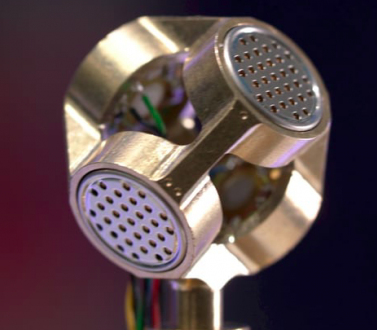
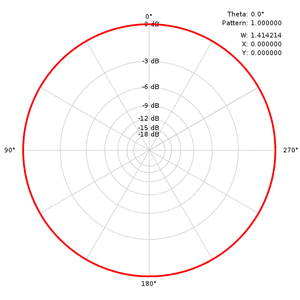

I. Web platform
Ambisonic has been encoded in 360 video using Facebook 360 Encoder and deployed in Youtube as a 360 video. This will make the video compatible with VR mode. Users can use Google cardboard or Oculus Rift to navigate and change direction.
The video can also be rotated by sliding the video or using controller on the top left of the video.
For mobile user, rotating mobile device will also move the direction of the camera.
Ambisonic has been encoded in 360 video using Facebook 360 Encoder and deployed in Youtube as a 360 video. This will make the video compatible with VR mode. Users can use Google cardboard or Oculus Rift to navigate and change direction.
The video can also be rotated by sliding the video or using controller on the top left of the video.
For mobile user, rotating mobile device will also move the direction of the camera.

Please choose one location
Use headphone for best experience
Rotating by:Tilting your phone
Watch in VR mode
Drag your mouse
Slide your finger
Use navigation controller on top left of the video
Rotating by:
The project
With almost one in five Australians experiencing some form of disability, a large proportion of the community face challenges to actively participate in city life.
This project (a participant for the Open innovation competition on city accessibility in 2018) is a proof of concept for a long-term technology-enabled solution to issues experienced by people with vision impaired.
The surround sound technology that we use in this project is called ambisonics, a full-sphere surround sound technique: in addition to the horizontal plane, it covers sound sources above and below the listener.
 
Sound are recorded by a tetrahedron microphone (left image) to get 4-channel monophonic A-format. This will then be converted into 4-channel B-format using mathematical formula.
II. Mobile Platform